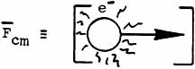
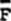
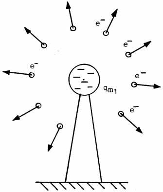

|
Now note
that what actually happens is that the unrestrained test charge becomes
a CHARGED MASS SYSTEM VECTOR (a "smeared charged mass-motion
changing"). The "test charge" BECOMES a charged
mass force vector; it does not have a separate geometer's vector
"appear on it." What actually happens is shown in Figure
7.

Figure 7. A charged-mass-system vector.
That is, in the simplest (nonrelativistic) case, for an electron what
happens is
and this is a DEFINITION. That is, considered
instantly, the electron exists as a charged-mass electrical force
CONSISTING OF/COMPRISED OF a charge flux qe canonically
coupled to a mass, with that subsystem then canonically coupled to a
spatial acceleration vector, ALL AS A SINGLE ENTITY, WITHOUT ANY
"SEAMS" BETWEEN ITS "PARTS." The  cm
IS THE ELECTRON SYSTEM ITSELF; it is NOT a "spatial
vector." Rigorously, it does not exist in the absence of the
smeared electron mass, a priori.
Again, in
assuming this force exists in the absence of the smeared mass of the
moving particle, electromagnetics theory is in serious logical error.
Referring
back to Figure 6, we see that, if we repeat the experiment many times and
with the test charge in many locations, we have the situation shown in
Figure 8.

Figure 8. Repeating the "test charge"
experiment.
It is found
that, rigorously,
where cm
is a charged mass system vector. Erroneously, this has been stated
one way or another as
where
is assumed to be a spatial system vector. Further, this confusion
has been carried over into the definition of the  -field
as: -field
as:
In this definition,
-- which is a charged mass system vector -- has been confused as a
charged spatial system vector, where
is regarded simply a spatial system vector! Actually, the
definition of the -field
should be
where cm
is a charged mass system vector. Failure to properly define the -field
has caused the conception of the -field
to be falsely perpetuated as existing in vacuum.
The -field
is TREATED this way in present EM theory. Hence present theory
falsely assumes that the observable -field
can exist in vacuum.
What
actually exists in space, -field-wise,
is a special kind of ordered virtual state pattern in a series of
spinning "scalar" fields. This virtual state pattern or
"shadow vector" field will be explained later.
Note again
that one cannot have a "force vector" existing in vacuum - a
priori.
However,
assume for a moment that one could have a massless force vector, as
presently assumed. Let this force vector appear at a point in the
vacuum. Since the vacuum has zero observable mass, it would have
zero inertial resistance to this hypothetical observable force hence the
observable force would instantly produce an "infinite"
acceleration of its point of application, vanishing with it into the
distance. Therefore our fictitious force would disappear the
instant it appeared! In any case, it could not be retained at a
point in the vacuum for any finite length of time, however small.
The direct
implications are that (1) something other than an observable electrical
force field exists in the vacuum, and (2) there must exist a more fundamental
mechanism by which this "something else" generates or
CREATES a change on/of an accelerating electrically charged mass
particle. (Note again that at the basic level, any particle of
mass is ALWAYS quivering and accelerating, from quantal fluctuation
considerations alone.) Causality has no arrow microscopically.23
Next Page
|
 qm
qm